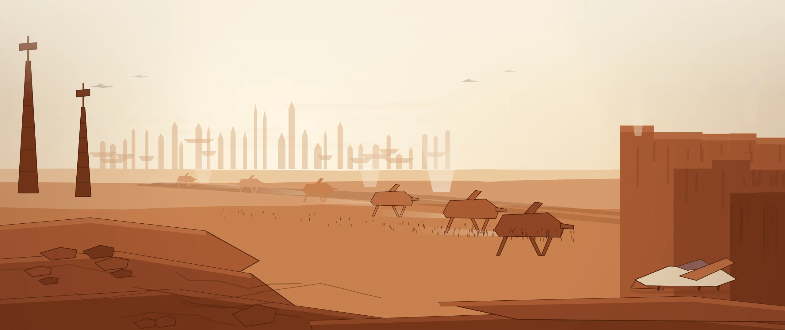
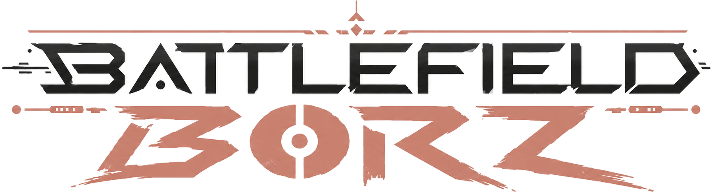

Optional, and at most two. Every one of them changes the question rather than the number, they are in force from the first wave, none of them makes the run cheaper, and every one of them pays Insight for as long as you survive it.
How you sit when you kneel to the Holocron mid-run. Hover a pose to see it.
The palette every layer below is derived from. Each piece can then be dyed on its own — the first swatch in every row is as the robe, which is what it was.
Cut from the over-robe, so it takes the Over-robe tone below.
The collar, the crossed V at the chest and the cuffs under the sleeves.
Drag to turn, wheel to move in. The Jedi you build is the Jedi you carry.
Peer-to-peer. One player hosts, the rest join with the code. No server, no account.
Share this code. Up to 4 Jedi.
Off, this is co-op: your blade, your bolts and your Force pass through the people you came with, and the only thing you can hurt is the horde. On, it is a free-for-all — friendly fire is not a separate switch, it is what this one means, so there are no allies and no accidents. Everybody drops to the duel's health. Takes effect on the next Ignite, and it is read on each machine, so agree on it before you deploy.
One field, two armies, and the people in the roster above at the head of them. The host sets all of it; nobody else's menu is read.
Per side, not per commander — two allies split one army of this size rather than bringing one each, so three players is a fair 2v1 instead of 15 against 10.
Off, what you brought is what you have. On, a squad lands behind both lines on one clock and the middle of the plain becomes a frontline — until a side's muster points run out, which is what decides how long it can keep feeding.
What each army is MADE of is the contingent's own shelf, under Options → Your army: a rung of the ladder, or Mixed to spend the side's points on the line first and then the heaviest thing left affordable. It is the host's like everything else here, and it is one picker rather than two answers to one question.
Press a name to move them across. Two sides have to have somebody on them.
On, the blade stays where your last flick left it. Off, it eases back to the ready guard between swings.
Takes the browser's tabs and address bar off the screen. On a phone it also stops the URL bar sliding over the controls, so it is worth having on there whatever this box says.
Your options and keybinds live in this browser only. Copy them here to carry them to another browser — or to keep a copy before anything goes wrong.
Drain at 0 is unlimited Force. Power scales reach, lift and impulse together.
How much of the lattice you can reach. Earned is the run currency: you kneel at a holocron and spend Insight, and nothing carries to the next run. Open starts every deploy with a deep purse; prices still climb. Everything woken hands you every facet before the first wave. Changing this takes effect on your next deploy, not this one.
How much of your own damage reaches your own troops. At 0 a sweep through the line hurts nobody; at 100% it can cost you a name off the roster. It scales damage only — a push still throws your sergeant as far as it throws a B1, and a grip still lifts him.
How many named troopers deploy with you, in any mode that fights a wave, on any ground. They carry ranks and serials, take the seven formation orders on the order keys, and stay dead when they fall. Waves are composed against the army standing in them, so more men mean a bigger fight, not an easier one; losses are replaced one man every two waves cleared, never above the number set here. 0 is off. Command, Skirmish and Campaign ignore this — their army comes with the mode. The Duel and Training refuse it — a ladder is one body against one body, and a lesson has no line in it — and this row greys out and says so when you pick one.
Command only, and needs a session. With nobody to meet — no session, and no second commander in it — the meeting stands down and Command fights its own composed campaign instead; it says so on the field when it does. A meeting engagement is what two armies have when neither had time to dig in — and it is what Command becomes with this on: one battle against another player's army instead of five areas against a composed horde, two rosters deployed 120 m apart and walking toward each other. The ground between you is a front, and it moves. It goes to whichever commander has his line gathered around him and past it — scattered takes nothing however far forward it is, and an army standing on ground it already holds is holding rather than advancing. Drive the front to their baseline and the field is yours. So the battle is decided by which of you was somewhere else at the wrong moment. Whoever joined the session first keeps the army their order names; the other takes the opposing one. Permadeath still applies — the field goes to whichever side still has somebody standing. Skirmish and Campaign ignore this.
On, a walker, a beast, a giant or a named duellist takes 15% of anything a blade, a bolt or a power does to it, and the whole of a support call — double from the right one: the mass driver or the orbital strike on a walker, the ion pulse on a droid giant, the bombardment or cluster munitions on a beast. The HUD says so the first time you hit one. A rule, so the host's. Off by default while we see if it is a good idea.
Skirmish only. An engagement is one piece of ground, cleared over the number of waves set here, so the top two sliders multiply into the length of the whole battle: 3 and 3 is the default nine waves, 9 and 8 is seventy-two. Your line is how many men you muster with. Pressure is which rung of the Geonosis advance the fight is held at — it raises the enemy's budget and how heavy they come, and changes what your muster can buy. With the last box ticked each engagement is fought on a different theatre, drawn from the run's seed.
The formation your squads form up in at the start of every area. You can change it mid-fight with the order keys — they are ordinary rebindable controls, listed under Key bindings and printed on the controls page.
Click a key to rebind. Mouse buttons work too.
Both multiply the tier above rather than replacing it, so Performance at 150% particles is still thinner than Cinematic at 100%. Particles take effect on the next impact; grass on the next deploy, because a field is planted when the level loads.
Severed limbs, cut props and shattered walls all share this budget; past it the oldest piece is culled. It is the number that decides whether a long fight leaves a battlefield behind it or a clean floor.
Off, reinforcements are flown, walked or dropped in and you can see them coming. On, they appear where they are needed, which costs far less to draw.
On, frame time, 1% low and draw calls sit in the corner of the HUD, and the graphics adapter and build id appear in the footer of this screen.
Letterbox bars close in when a boss arrives. Colour drains when you fall. Both work with Camera shake off, and are the only signal for either event if it is.
How hard the pad kicks on a kill, a blow taken and a deflection. 0 is silent, 1 is full strength. Camera shake off silences the pad too; this scales whatever is left.
Synthesised is a wordless voice built in the browser. Spoken is your browser's speech synthesiser saying the same lines in words. Both plays them together. Neither is a recording, and neither downloads anything.
Every Force power has three or four lines of its own and never repeats one twice running — a shove falls, a pull rises, a rend is wrenched down almost an octave. Every voice is built in the browser as it is needed rather than played back, so the last box is worth a few frames on a slow machine.
Your Jedi grunts with the effort of a real swing, takes a hard landing badly, and has something to say about a kill, a run of deflections, a boss walking in and being nearly dead. Five larynxes, five throats, five tempos.
Whatever colour you pick, it still turns red when something is close enough to kill you.
Killstreaks, deflection runs and a boss arriving, in the score column of the HUD.
Contacts around you, heading-up, out to 42 m — bosses warm, allies green, and anything further away pinned to the rim. Off, it is not drawn at all.
Wherever you have troops — the crossings, and any mode at all once Allied troops above is off zero. Rank, name, health and nerve, over the head of the man carrying them.
On, the map only lights when you use Force sense: hold the power and it stays lit while the pool drains, or tap it for a reading that fades over a few seconds. It costs what the power costs and no more. Off, the map is always there and costs nothing.
Every one of these can be rebound under Options, and this page is printed from those bindings — rebind a key and this is what it says.
—
—
The ones that bite on the very next frame. The rest are on the Options screen.
Click a key to rebind. Mouse buttons and the wheel work too. Right-click a key to clear it.
This browser or machine cannot run the renderer. Try a recent Chrome, Edge, or Firefox with hardware acceleration enabled.